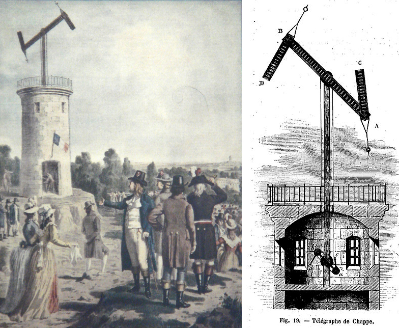

<!DOCTYPE html>
<html lang="en">
  <head>
    <meta charset="utf-8" />
    <meta name="viewport" content="width=device-width, initial-scale=1.0, maximum-scale=1.0, user-scalable=no" />

    <title></title>
    <link rel="stylesheet" href="dist/reveal.css" />
    <link rel="stylesheet" href="dist/theme/night.css" id="theme" />
    <link rel="stylesheet" href="plugin/highlight/zenburn.css" />
	<link rel="stylesheet" href="css/layout.css" />
	<link rel="stylesheet" href="plugin/customcontrols/style.css">


    <script defer src="dist/fontawesome/all.min.js"></script>

	<script type="text/javascript">
		var forgetPop = true;
		function onPopState(event) {
			if(forgetPop){
				forgetPop = false;
			} else {
				parent.postMessage(event.target.location.href, "app://obsidian.md");
			}
        }
		window.onpopstate = onPopState;
		window.onmessage = event => {
			if(event.data == "reload"){
				window.document.location.reload();
			}
			forgetPop = true;
		}

		function fitElements(){
			const itemsToFit = document.getElementsByClassName('fitText');
			for (const item in itemsToFit) {
				if (Object.hasOwnProperty.call(itemsToFit, item)) {
					var element = itemsToFit[item];
					fitElement(element,1, 1000);
					element.classList.remove('fitText');
				}
			}
		}

		function fitElement(element, start, end){

			let size = (end + start) / 2;
			element.style.fontSize = `${size}px`;

			if(Math.abs(start - end) < 1){
				while(element.scrollHeight > element.offsetHeight){
					size--;
					element.style.fontSize = `${size}px`;
				}
				return;
			}

			if(element.scrollHeight > element.offsetHeight){
				fitElement(element, start, size);
			} else {
				fitElement(element, size, end);
			}		
		}


		document.onreadystatechange = () => {
			fitElements();
			if (document.readyState === 'complete') {
				if (window.location.href.indexOf("?export") != -1){
					parent.postMessage(event.target.location.href, "app://obsidian.md");
				}
				if (window.location.href.indexOf("print-pdf") != -1){
					let stateCheck = setInterval(() => {
						clearInterval(stateCheck);
						window.print();
					}, 250);
				}
			}
	};


        </script>
  </head>
  <body>
    <div class="reveal">
      <div class="slides"><section  data-markdown><script type="text/template"><!-- .slide: class="drop" data-background-opacity="0.5" data-background-image="computer1 mid 60s.jpg" -->
<div class="" style="position: absolute; left: 0px; top: 0px; height: 540px; width: 960px; min-height: 540px; display: flex; flex-direction: column; align-items: center; justify-content: center" absolute="true">

<div class="" style="position: absolute; left: 50%; top: 17%; height: 71%; width: 46%; display: flex; flex-direction: column; align-items: flex-start; justify-content: flex-start" align="left">


### HIST1900C: The History of the Internet

##### with Prof. Graham
###### shawn.graham@carleton.ca
https://shawngraham.github.io/hist1900/assets/slides/jan9 

</div>
</div></script></section><section  data-markdown><script type="text/template"><!-- .slide: class="drop" -->
<div class="" style="position: absolute; left: 0px; top: 0px; height: 540px; width: 960px; min-height: 540px; display: flex; flex-direction: column; align-items: center; justify-content: center" absolute="true">


</div></script></section><section  data-markdown><script type="text/template"><!-- .slide: class="drop" -->
<div class="" style="position: absolute; left: 0px; top: 0px; height: 540px; width: 960px; min-height: 540px; display: flex; flex-direction: column; align-items: center; justify-content: center" absolute="true">

Round 1.

- &shy;<!-- .element: class="fragment" data-fragment-index="1" -->_Morphic Street, 9 o'clock tonight, password: swordfish._
</div>

<aside class="notes"><p>play the telephone game with the first row. give them that message. what does it become at the end of the row? One of the major problems in human civilization has always been the communication of information over distance, securely. How can we know that the message received is the one that was sent?</p>
</aside></script></section><section  data-markdown><script type="text/template"><!-- .slide: class="drop" -->
<div class="" style="position: absolute; left: 0px; top: 0px; height: 540px; width: 960px; min-height: 540px; display: flex; flex-direction: column; align-items: center; justify-content: center" absolute="true">

Round 2. 

- &shy;<!-- .element: class="fragment" data-fragment-index="1" -->hw mch dstrctn cn hppn t mssg bfr t s nrdbl
</div>

<aside class="notes"><p>language features redundancy. this will turn out to be a key element in the creation of digital communication</p>
</aside></script></section><section  data-markdown><script type="text/template"><!-- .slide: class="drop" -->
<div class="" style="position: absolute; left: 0px; top: 0px; height: 540px; width: 960px; min-height: 540px; display: flex; flex-direction: column; align-items: center; justify-content: center" absolute="true">

Round 3.

- &shy;<!-- .element: class="fragment" data-fragment-index="1" -->message 1: we will meet downstairs by the upstairs stairs
- &shy;<!-- .element: class="fragment" data-fragment-index="2" -->message 2: when the clock clocks down we will wend our way willingly westward.
</div>

<aside class="notes"><p>give two messages to opposite corners of the front. ask them to pass the message to the person who they think can get the message to the person middle back row the fastest... and go!
The problem of bandwidth is the problem of what happens when two messages are competing in the same space.</p>
</aside></script></section><section  data-markdown><script type="text/template"><!-- .slide: class="drop" -->
<div class="" style="position: absolute; left: 0px; top: 0px; height: 540px; width: 960px; min-height: 540px; display: flex; flex-direction: column; align-items: center; justify-content: center" absolute="true">

<div align="left">
These are silly games. But they point to some fundamental problems of communication that have profound consequences. 
<br><br>
This course will explore that history.
</div>
</div>

<aside class="notes"><p>The ‘history of the internet’ is more than the history of a particular package of technologies. It’s a story about power, people, culture, and materials. </p>
<p>The ‘internet’ isn’t a <em>thing</em>, it’s a <em>place</em> and since time and space are unified, it’s an <em>age</em>. </p>
<p>What is an appropriate frame to study the internet, and once we’ve decided on that, <em>what might we see?</em> </p>
<p>I’m not sure where this will take us – but wherever we go, the journey will change how you think about the world.</p>
</aside></script></section><section  data-markdown><script type="text/template"><!-- .slide: class="drop" -->
<div class="" style="position: absolute; left: 0px; top: 0px; height: 540px; width: 960px; min-height: 540px; display: flex; flex-direction: column; align-items: center; justify-content: center" absolute="true">

Today's Agenda

- who I am & why that actually matters to this course
- who you are & why that actually matters to this course
- my philosophy of teaching: process over product
	- your own personal memex
- the course website / syllabus
- what you need to do by wednesday
</div>

<aside class="notes"><p>who I am: not a historian, but an archaeologist
who you are: first year students; students who&#39;ve endured the pandemic; who teaches you how to actually <em>be</em> a student?</p>
</aside></script></section><section  data-markdown><script type="text/template"><!-- .slide: class="drop" -->
<div class="" style="position: absolute; left: 0px; top: 0px; height: 540px; width: 960px; min-height: 540px; display: flex; flex-direction: column; align-items: center; justify-content: center" absolute="true">

<split wrap="4">


</split>

<div class="" style="position: absolute; left: 70%; top: 17%; height: 71%; width: 26%; display: flex; flex-direction: column; align-items: flex-end; justify-content: flex-start" align="right">


Stamped Roman <br>
Bricks, yeah!

and from these things, we can deduce networks
</div>
</div>

<aside class="notes"><p>standard brick bumpf, but emphasize that these things, whatever else they did, communicated information about a load of material, they functioned in a context of movement, control; we can also deduce from them movements of people from one organization to the next, and the coalescing or fissioning of different outfits.</p>
</aside></script></section><section  data-markdown><script type="text/template"><!-- .slide: class="drop" -->
<div class="" style="position: absolute; left: 0px; top: 0px; height: 540px; width: 960px; min-height: 540px; display: flex; flex-direction: column; align-items: center; justify-content: center" absolute="true">

<split wrap="4">


</split>

<div class="" style="position: absolute; left: 70%; top: 17%; height: 71%; width: 26%; display: flex; flex-direction: column; align-items: flex-end; justify-content: flex-start" align="right">

<br><br><Br><br><Br>
Networks the focus <Br> of all my early research
</div>
</div>

<aside class="notes"><p>Most of this was done when I wasn&#39;t an academic; snotty essay I wrote as undergrad; exploring and playing with archaeological data on the web and giving my notes and research away made me part of &#39;the digital humanities&#39;. I owe my career to the internet.</p>
</aside></script></section><section  data-markdown><script type="text/template"><!-- .slide: class="drop" -->
<div class="" style="position: absolute; left: 0px; top: 0px; height: 540px; width: 960px; min-height: 540px; display: flex; flex-direction: column; align-items: center; justify-content: center" absolute="true">


[https://thedigitalpress.org/failing-gloriously/](https://thedigitalpress.org/failing-gloriously/)
</div>

<aside class="notes"><p>I&#39;ve been lucky to be a white guy on the internet, letting my experiments and failures be open, learning from them. The internet, the web, is a toxic place: this is what &#39;privilege&#39; means: whatever else my troubles, my problems, my challenges, my gender &amp; skin colour didn&#39;t <em>ADD</em> to those troubles. I was in some shitty places. But I could experiment and admit that things hadn&#39;t gone right.  Thus I see my job here is to make it safe for all of you to try things out and experiment and NOT HAVE TO WORRY ABOUT ALWAYS BEING &#39;RIGHT&#39;. There is no hidden gotcha here: no one-and-done assessment.</p>
</aside></script></section><section  data-markdown><script type="text/template"><!-- .slide: class="drop" -->
<div class="" style="position: absolute; left: 0px; top: 0px; height: 540px; width: 960px; min-height: 540px; display: flex; flex-direction: column; align-items: center; justify-content: center" absolute="true">


### Current Research 
- the human remains trade on social media
- neural networks and knowledge graph embedding models of the antiquities trade
- legacy archaeological data and artificial intelligence including generative imagery

I also look after the minor in Digital Humanities & the MA Specialization in Digital Humanities
</div></script></section><section  data-markdown><script type="text/template"><!-- .slide: class="drop" -->
<div class="" style="position: absolute; left: 0px; top: 0px; height: 540px; width: 960px; min-height: 540px; display: flex; flex-direction: column; align-items: center; justify-content: center" absolute="true">

## Who are all of you?
<small>

|Degree |U1 |U2 |U3 |U4 |Other |Totals|
|-------|---|---|---|---|-------|-----|
|Bachelor of Arts Honours (BA HON) |32 |10 |9 |3 |0 |54|
|Bachelor of Computer Science (BCS) |6 |5 |5 |7 |0 |23|
|Bac of Computer Science Major (BCSM) |1 |3 |2 |0 |0 |6|
|Bac. of Comm & Media St. Hons (BCMSH) |7 |2 |1 |0 |0 |10|
|Bachelor of Arts (BA GEN) |11 |4 |8 |0 |0 |23|
</small>
Plus another 26 sundry. At least as of last week.
</div>

<aside class="notes"><p>Even for those of you who&#39;ve been around for the last few years, you&#39;ve been here under the conditions of emergency teaching. You all of you have been taught the <em>formalisms</em> of what academic work looks like, but have largely missed the <em>meaning</em> of it all. So I want to try to undo some of that damage, and so my focus is not on PRODUCT but on your PROCESS.</p>
</aside></script></section><section  data-markdown><script type="text/template"><!-- .slide: class="drop" -->
<div class="" style="position: absolute; left: 0px; top: 0px; height: 540px; width: 960px; min-height: 540px; display: flex; flex-direction: column; align-items: center; justify-content: center" absolute="true">

## Personal Memex

<split wrap="4">


</split>

[As We May Think, 1945](https://www.theatlantic.com/magazine/archive/1945/07/as-we-may-think/303881/)
</div>

<aside class="notes"><p>We&#39;re not writing essays. Instead, you&#39;ll be keeping a semester long personal notebook and we&#39;ll be trying to push you to learn how to read like an academic, make notes like an academic, and then interlink your notes so that the ideas that are latent in them rise to the surface. In this, we will mimic the structure of the internet. We will see an evolution in our notes that reflects how the structure of the internet EMERGED; emergence is an important concept in complexity theory, and we&#39;ll explore what that means for society, culture, history - and your own notes and thinking.</p>
</aside></script></section><section  data-markdown><script type="text/template"><!-- .slide: class="drop" -->
<div class="" style="position: absolute; left: 0px; top: 0px; height: 540px; width: 960px; min-height: 540px; display: flex; flex-direction: column; align-items: center; justify-content: center" absolute="true">

- &shy;<!-- .element: class="fragment" data-fragment-index="1" -->  You will build your own version of the memex
	-   Based on things you read, things we discuss, and things I might direct your attention to
	-   Parts of this memex will be pushed online for periodic review by us
- &shy;<!-- .element: class="fragment" data-fragment-index="2" -->  You will be able to interlink your memex to your peers
- &shy;<!-- .element: class="fragment" data-fragment-index="3" -->  The final part will involve you surfacing a journey through your notes that will answer two key questions:
	-   What is the most powerful thing you have learned in this course, and why?
	-   Have you achieved your goals for this course?
</div></script></section><section  data-markdown><script type="text/template"><!-- .slide: class="drop" -->
<div class="" style="position: absolute; left: 0px; top: 0px; height: 540px; width: 960px; min-height: 540px; display: flex; flex-direction: column; align-items: center; justify-content: center" absolute="true">

<split wrap="4">



</split>


<small>

-   Course is organized into three modules
	-   A prehistory of the internet
	-   The first internet that you might not know anything much about
	-   The second internet that underpins modern life (and you were probably thinking would be the entire focus of this class).

[https://shawngraham.github.io/hist1900](https://shawngraham.github.io/hist1900)

</small>
</div></script></section><section  data-markdown><script type="text/template"><!-- .slide: class="drop" -->
<div class="" style="position: absolute; left: 0px; top: 0px; height: 540px; width: 960px; min-height: 540px; display: flex; flex-direction: column; align-items: center; justify-content: center" absolute="true">

## This is a digital history class

There *will* be digital tools to install and use.

-   NB Any public-facing work can be done under a pseudonym as long as you tell me who you are! 
	- I *don't* need to know why you want to use a pseudonym; none of my business.
</div></script></section><section  data-markdown><script type="text/template"><!-- .slide: class="drop" -->
<div class="" style="position: absolute; left: 0px; top: 0px; height: 540px; width: 960px; min-height: 540px; display: flex; flex-direction: column; align-items: center; justify-content: center" absolute="true">

-   [shawn.graham@carleton.ca](mailto:shawn.graham@carleton.ca)

-   Email at any time is fine; I’m _very_ online
-   How to email a prof: 

- Dear Dr Graham
	- who you are
	- what the issue is
	- your availability in the following week for a zoom meeting
	- your NAME and pseudonymn for online work if necessary
</div></script></section><section  data-markdown><script type="text/template"><!-- .slide: class="drop" -->
<div class="" style="position: absolute; left: 0px; top: 0px; height: 540px; width: 960px; min-height: 540px; display: flex; flex-direction: column; align-items: center; justify-content: center" absolute="true">

## COVID AIN'T OVER
<small>

-   Everything sucks.
-   **If you’re sick, don’t come to class. Catch up via our discord.**
	-   I don’t need a Dr’s note. _I trust you_. I will not chase you down.

-   BECAUSE Covid wrecks your immune system with repeated exposures, making you more likely to get seriously ill from things that wouldn’t have bothered you before;
-   BECAUSE the f’n pandemic is _not_ over, and one of its features is how it weakens everything;
-   BECAUSE we are in the bowels of one of the worst buildings on campus and the air quality is suspect:
	-   I will _always_ be wearing a mask.
	-   I hope you will always wear a mask here.

</small>
</div></script></section><section  data-markdown><script type="text/template"><!-- .slide: class="drop" -->
<div class="" style="position: absolute; left: 0px; top: 0px; height: 540px; width: 960px; min-height: 540px; display: flex; flex-direction: column; align-items: center; justify-content: center" absolute="true">

Wednesday:

- Read and understand the complete course website for Wednesday

-  Have the tutorial level complete (it will walk you through setting up all the other variety of things)

- Next Class:  Assemblage theory, networks, and flows oh my!
</div></script></section></div>
    </div>

    <script src="dist/reveal.js"></script>

    <script src="plugin/markdown/markdown.js"></script>
    <script src="plugin/highlight/highlight.js"></script>
    <script src="plugin/zoom/zoom.js"></script>
    <script src="plugin/notes/notes.js"></script>
    <script src="plugin/math/math.js"></script>
	<script src="plugin/mermaid/mermaid.js"></script>
	<script src="plugin/chart/chart.min.js"></script>
	<script src="plugin/chart/plugin.js"></script>
	<script src="plugin/customcontrols/plugin.js"></script>

    <script>
      function extend() {
        var target = {};
        for (var i = 0; i < arguments.length; i++) {
          var source = arguments[i];
          for (var key in source) {
            if (source.hasOwnProperty(key)) {
              target[key] = source[key];
            }
          }
        }
        return target;
      }

	  function isLight(color) {
		let hex = color.replace('#', '');

		// convert #fff => #ffffff
		if(hex.length == 3){
			hex = `${hex[0]}${hex[0]}${hex[1]}${hex[1]}${hex[2]}${hex[2]}`;
		}

		const c_r = parseInt(hex.substr(0, 2), 16);
		const c_g = parseInt(hex.substr(2, 2), 16);
		const c_b = parseInt(hex.substr(4, 2), 16);
		const brightness = ((c_r * 299) + (c_g * 587) + (c_b * 114)) / 1000;
		return brightness > 155;
	}

	var bgColor = getComputedStyle(document.documentElement).getPropertyValue('--r-background-color').trim();
	var isLight = isLight(bgColor);

	if(isLight){
		document.body.classList.add('has-light-background');
	} else {
		document.body.classList.add('has-dark-background');
	}

      // default options to init reveal.js
      var defaultOptions = {
        controls: true,
        progress: true,
        history: true,
        center: true,
        transition: 'default', // none/fade/slide/convex/concave/zoom
        plugins: [
          RevealMarkdown,
          RevealHighlight,
          RevealZoom,
          RevealNotes,
          RevealMath.MathJax3,
		  RevealMermaid,
		  RevealChart,
		  RevealCustomControls,
        ],


    	allottedTime: 120 * 1000,

		mathjax3: {
			mathjax: 'plugin/math/mathjax/tex-mml-chtml.js',
		},
		markdown: {
		  gfm: true,
		  mangle: true,
		  pedantic: false,
		  smartLists: false,
		  smartypants: false,
		},

		mermaid: {
			theme: isLight ? 'default' : 'dark',
		},

		customcontrols: {
			controls: [
			]
		},
      };

      // options from URL query string
      var queryOptions = Reveal().getQueryHash() || {};

      var options = extend(defaultOptions, {"width":960,"height":540,"margin":0,"maxScale":4,"controls":true,"progress":true,"slideNumber":false,"transition":"slide","transitionSpeed":"default"}, queryOptions);
    </script>

    <script>
      Reveal.initialize(options);
    </script>
  </body>

  <!-- created with Advanced Slides -->
</html>
